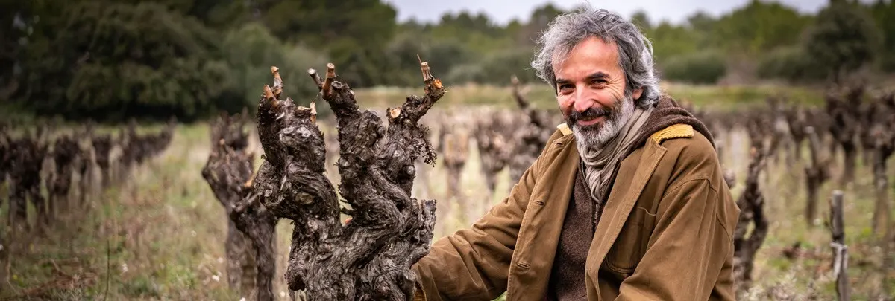
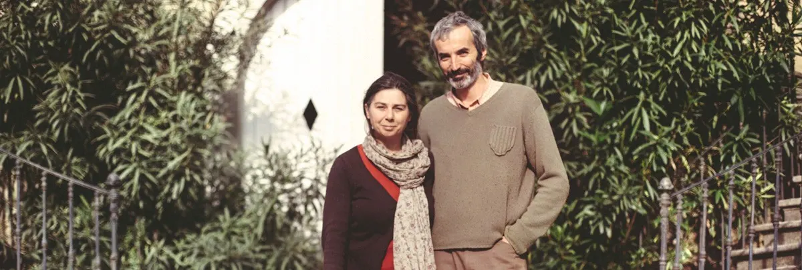
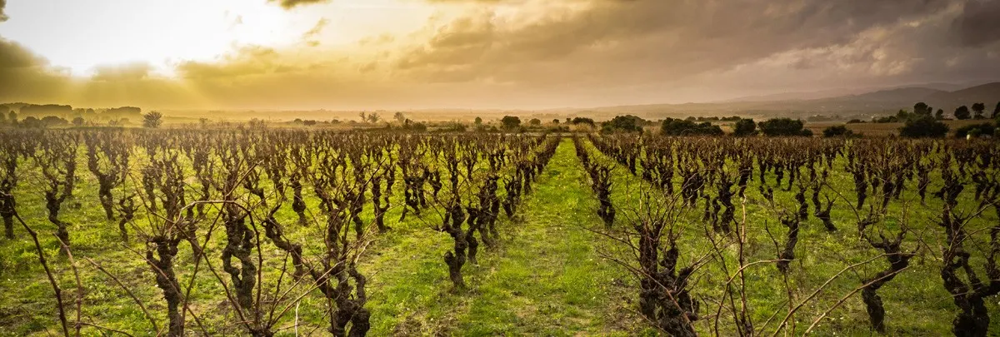
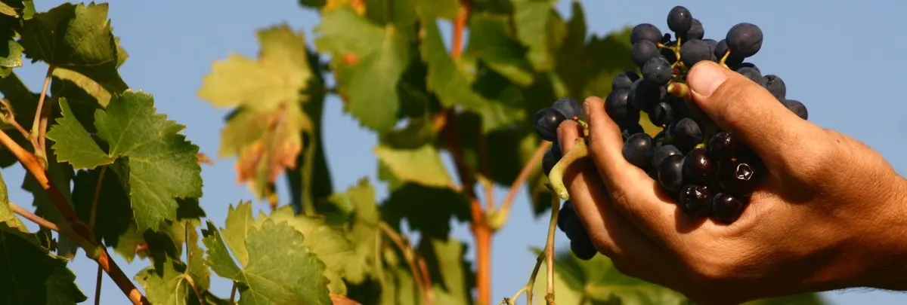
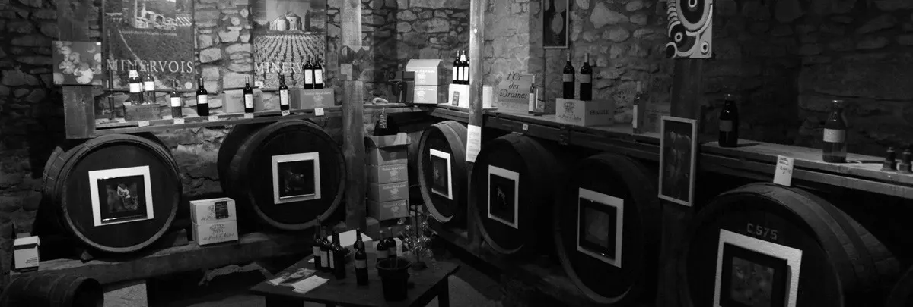
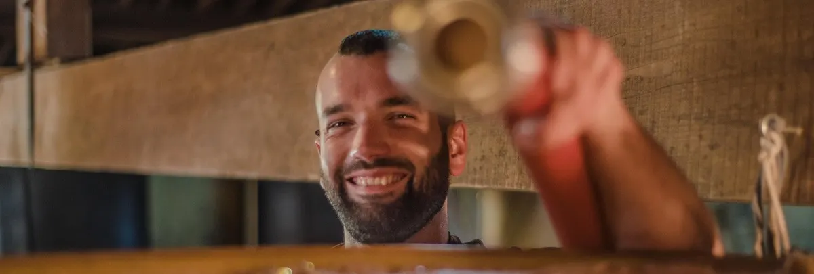
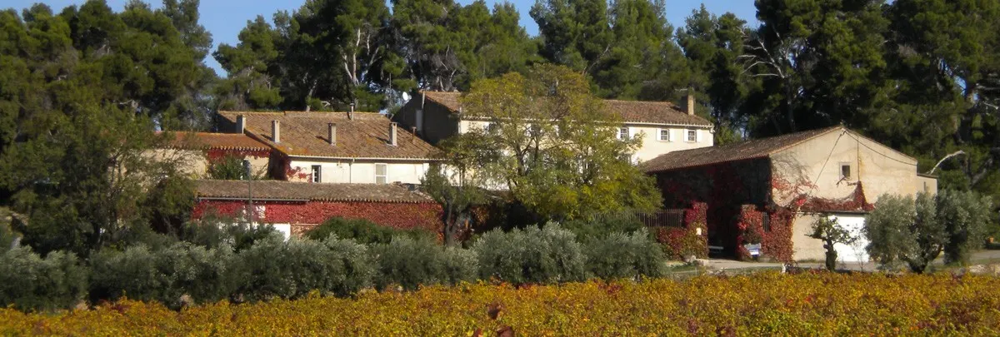
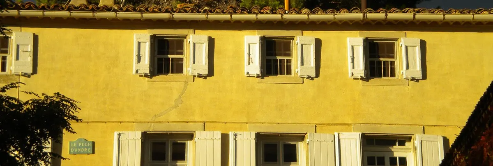

Le Gîte de la Pinède
4 personnes, 58 m²
Il ouvre directement sur le parc et la pinède, qui abrite la piscine familiale (sans surveillance, avec alarme).
Voir le gîteDes vins bio et naturels, un caveau ouvert tous les jours de 10h à 20h sans rendez-vous, deux gîtes ruraux et l'huile d'olive de la ferme, à Azillanet.

On ne sait pas au juste dater la naissance du Pech. On sait seulement que notre histoire familiale en ce lieu débute en 1701, quand notre premier aïeul Jean-Baptiste d'André, issu d'une famille toulousaine, s'établit sur quelques terres « Al Pech », sur la colline en occitan.

Quatre générations d'hommes se succèdent jusqu'aux « Demoiselles d'André », Marie, Jeanne et Louise, dernières du nom au Pech au début du XXᵉ siècle.
Louise d'André se marie. Sa fille Joséphine Bel prend la suite, puis Jeanne-Zoe Léontine Gervies, qui dirigea le domaine pendant plus de 30 ans, et sa fille Marie Simon, épouse de Louis Remaury.
Ils s'orientent vers la vente directe au domaine et vers une culture respectueuse de l'environnement, en précurseurs, et conduisent le ré-encépagement progressif du vignoble.
« Cette terre m'a été confiée. Je souhaite poursuivre la tradition d'authenticité et d'accueil du Domaine. »
Avec Mickaël, fils de Claude Brunel qui a travaillé au Pech plus de trente ans, avec Philippe et son fils Lorenz, et avec Claire, qui prend soin des vignes tout au long de l'année.
Depuis 1966, le vignoble est conduit dans le respect de l'environnement, et ré-encépagé peu à peu pour une meilleure expression du terroir et des vins plus aromatiques.
Des compétences d'écologue (docteur en pédologie) au service du maintien de ce patrimoine, de ces paysages et de leur biodiversité.
En 2026, pour la première fois depuis plus de 40 ans, toutes nos vignes ont été vendangées à la main.


Des vins de pays aux AOC Minervois et Languedoc, des cuvées nature aux cépages rares, en bouteille ou en cubi.
Parfait équilibre entre Syrah et Mourvèdre.
Blanc sec de Bourboulenc.
Blanc sec aux arômes d'abricot.
Rondeur et souplesse de la Syrah.
« Ça vibre, ça bouillonne, ça chauffe… »
Dans les semaines qui suivent les vendanges, la cave prend vie. Dans la pure tradition languedocienne, elle est faite de cuves en béton, la plupart équipées de trappes en chêne : une installation de plus de 150 ans.
Ouvert tous les jours, 7 jours sur 7, de 10h à 20h, sans rendez-vous.
Uniquement sur rendez-vous, commentée en français ou en anglais.


Aussi au domaine :

4 personnes, 58 m²
Il ouvre directement sur le parc et la pinède, qui abrite la piscine familiale (sans surveillance, avec alarme).
Voir le gîte8 personnes, 4 chambres, 117 m²
L'ancien logis du régisseur, il ouvre directement sur la cour du Domaine.
Voir le gîteLes deux gîtes sont attenants à la maison principale, chacun avec son entrée indépendante. Pour réserver, écrivez-nous ou appelez-nous : après vérification de la disponibilité, nous vous adressons une proposition de contrat. Nous acceptons les Chèques Vacances.

Domaine du Pech d'André
34210 Azillanet
Sur la route départementale entre Olonzac et Azillanet.
Ouvert tous les jours de l'année, 7 jours sur 7, de 10h à 20h, sans rendez-vous.
43.314339, 2.744069